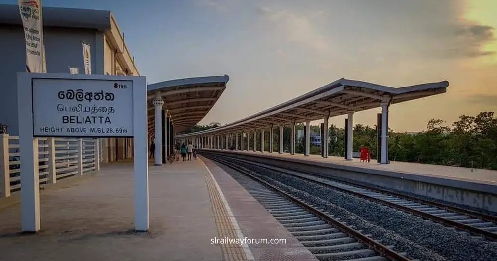
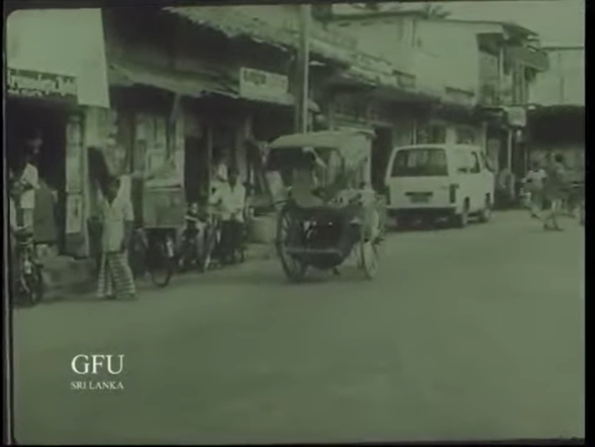
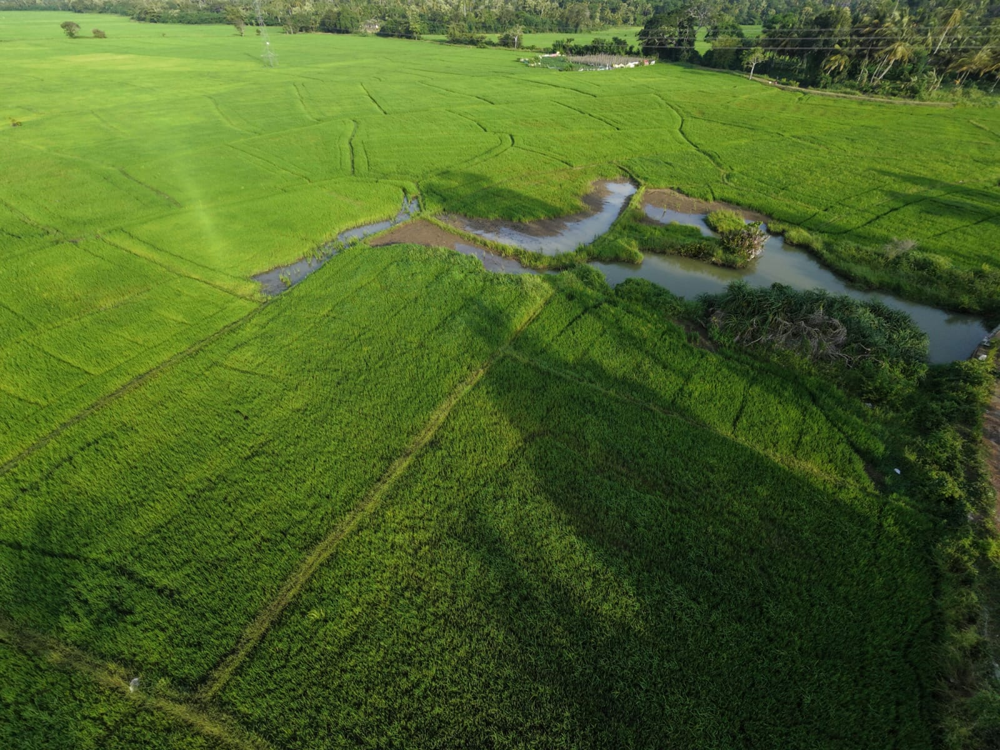
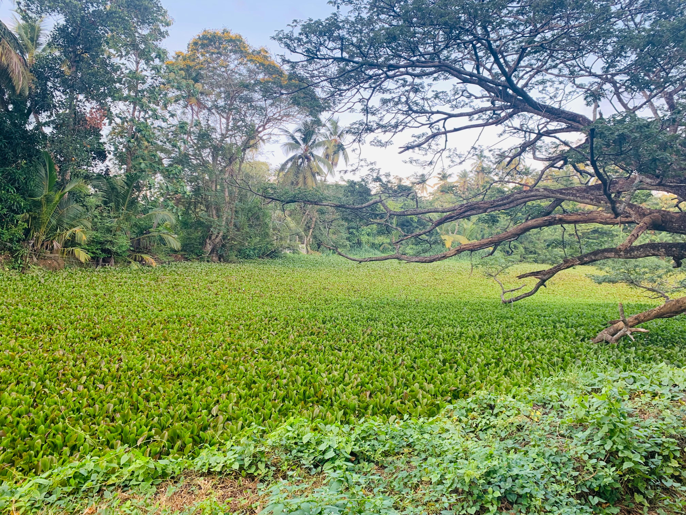
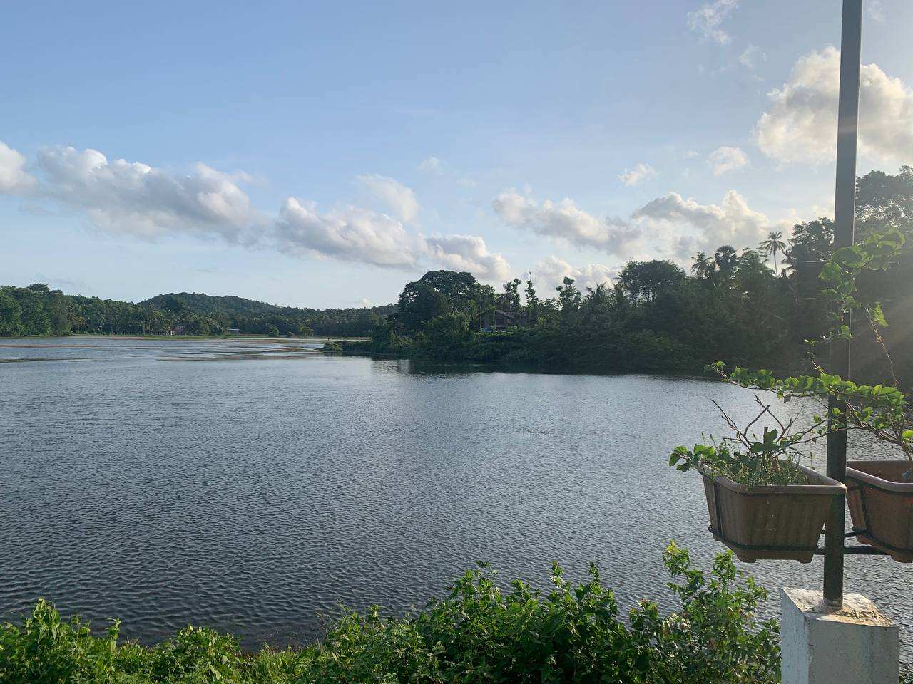
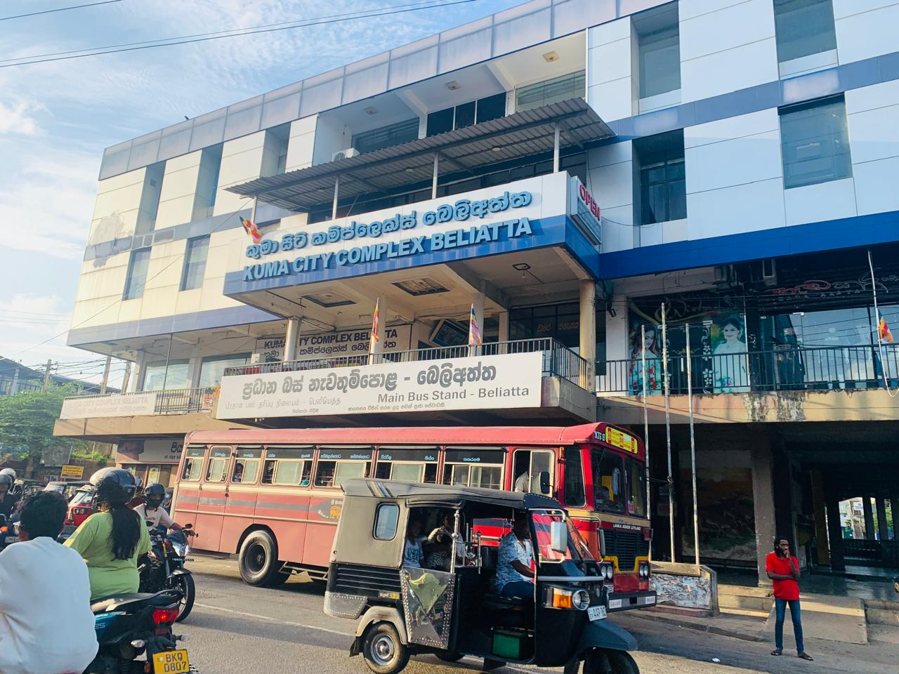
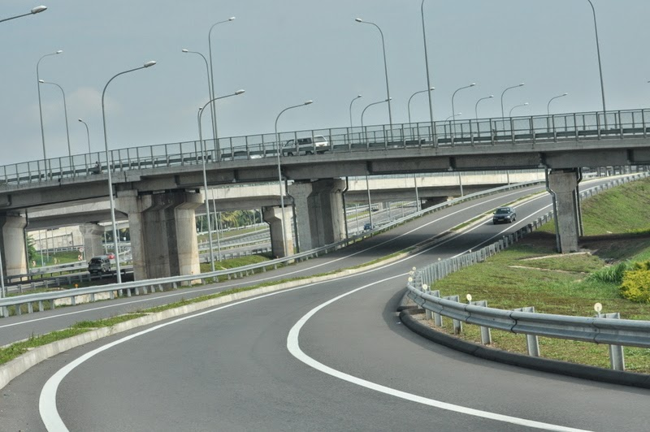
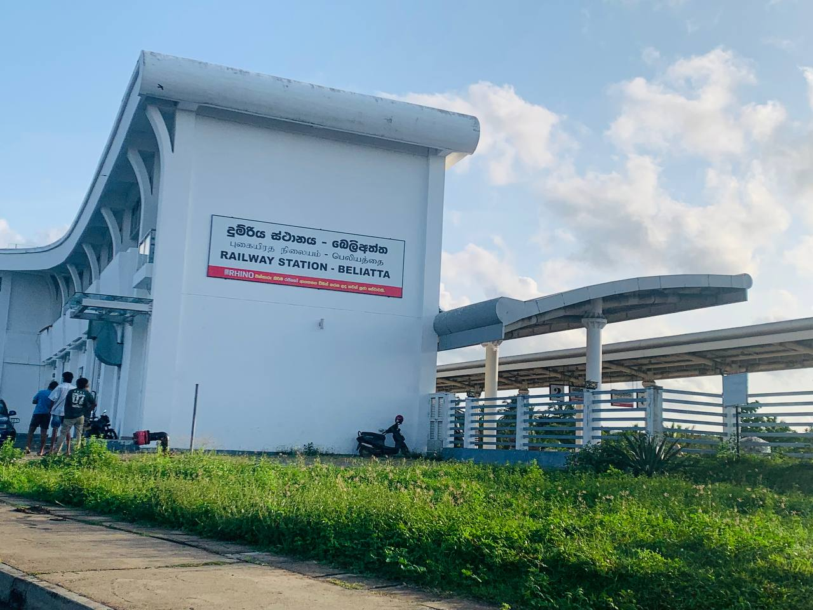

About Our Village
|
''Beliatta'' is a rapidly developing town located in the Hambantota District of Sri Lanka's Southern Province. Situated along the Matara-Tissamaharama (A2) main road, it serves as a key transport hub for the region, featuring a major interchange on the Southern Expressway and a modern terminal station on the coastal railway line extension. The town holds cultural and historical significance, most notably home to the ancient ''Kasagala Raja Maha Viharaya'' dating back to the Anuradhapura era, alongside strong political roots. Blending a tradition of agriculture-primarily paddy and coconut cultivation-with modern infrastructure, Beliatta offers a unique mix of urban convenience and scenic rural charm. |
 |
Village Highlights
|
 History & CultureBeliatta has a long history and a rich culture connected to the ancient Ruhuna kingdom. Local stories say the town got its name from a busy trading spot near a large Beli tree. Its most famous historic site is the Kasagala Temple, built in the 3rd century BC. Legend says it was named "Kasagala" (Yellow Rock) because monks dried their yellow robes on the large flat rocks, making them look golden. Over the years, Beliatta also became an important center for Buddhist learning and writing. Today, the town still keeps its traditional southern village culture alive through rice farming, coconut growing, local crafts like pottery, and its lively weekly market. |
   Natural EnvironmentBeliatta is a beautiful green area with small hills, streams, and plenty of trees. The town is surrounded by rich rice fields, coconut groves, and small lakes that are home to many birds and animals. Small forest patches and green open spaces give the area fresh, cool air and shelter for local wildlife. This mix of natural waterways, farms,and trees gives Beliatta a peaceful, calm, and scenic village feel. |
   InfrastructureBeliatta has become a modern transport hub in southern Sri Lanka with great infrastructure. It has a large, modern train station that connects the town directly to Colombo and other major cities. The town also connects to the Southern Expressway, making road travel fast and convenient. Along with strong transport links, Beliatta offers key public services such as hospitals, schools, government offices, good water and electricity supplies, and well-paved roads connecting to surrounding towns. |